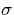

Next: List of Tables
Up: Chris Ewels' PhD Thesis
Previous: Contents
Listed in reverse chronological order:
- 1.
- sep=-1.5mm
- 2.
- indent=0mm
- 3.
- `Molecular rectification with M|DA LB film|M junctions',
A. S. Martin, A. C. Brady, B. Hodder, J. Roy Sambles, C. P. Ewels,
R. Jones, P. R. Briddon, A. M. Musa, C. A. Panetta, D. L. Mattern,
Science, To be submitted, 1997.
- 4.
- `The carbon interstitial in graphite - structure and mobility',
B. R. Eggen, M. I. Heggie, C. P. Ewels, G. Jungnickel, R. Jones,
P. R. Briddon, Phys Rev B, To be submitted, 1997.
- 5.
- `Shallow Thermal Donor defects in silicon' C. P. Ewels, R. Jones, S. Öberg, J. Miro, and P. Deák, Phys. Rev. Lett.
77 (5), 865-868 (1996).
- 6.
- `Is hydrogen anti bonded in hydrogenated GaAs:Mg?' R. Bouanani-Rabi, B. Pajot, C. P. Ewels, S. Öberg, J. Goss, R. Jones, Y. Nissim, B. Theys, and C. Blaauw. To be published in the
proceedings of SLCS96, 'Shallow Level Centers in Semiconductors',
Amsterdam, 1996.
- 7.
- `Shallow Thermal Donor Defects in Silicon', C. P. Ewels,
R. Jones, S. Öberg, J. Miro, P. Deák. To be published in the
proceedings of SLCS96, 'Shallow Level Centers in Semiconductors',
Amsterdam, 1996.
- 8.
- `Theoretical studies on nitrogen-oxygen complexes in silicon',
P. Deák, J. Miro, R. Jones and C. P. Ewels, J. Phys. C :
Cond. Matter 8 (41), 7711-7722 (1996).
- 9.
- `Oxygen-Carbon, Oxygen-nitrogen and oxygen-dimer defects in Si',
C. P. Ewels, R. Jones and S. Öberg, Oral Presentation and NATO ARW
'Early Stages of Oxygen Precipitation in Silicon', ed. R. Jones,
Kluwer Academic Press, p. 141.
- 10.
- `The nitrogen-pair oxygen defect in silicon', F. Berg
Rasmussen, S. Öberg, R. Jones, C. Ewels, J. Goss, J. Miro, and
P. Deák, NATO ARW 'Early Stages of Oxygen Precipitation in
Silicon', ed. R. Jones, Kluwer Academic Press, p. 319.
- 11.
- `The nitrogen-pair oxygen defect in Silicon', F. Berg
Rasmussen, S. Öberg, R. Jones, C. Ewels, J. Goss, J. Miro, and
P. Deák, Mat. Sci. Eng. B, 36, 91-95 (1996).
- 12.
- `Vacancy- and Acceptor- H complexes in InP', C. P. Ewels,
S. Öberg, R. Jones, B. Pajot and P. R. Briddon,
Semicond. Sci. Tech. 11, 1-6 (1996).
- 13.
- `Vielkopfige Hydra - Neue Medien verandern die wissenschaftliche
Kommunikation' - `Many-headed Hydra - The new media and scientific
communication', B. R. Eggen, C. P. Ewels, Zeitschrift für
Kulturaustausch, p.550, (1995), IFA, Germany.
- 14.
- `The NNO defect in Silicon', F. Berg Rasmussen, S. Öberg,
R. Jones, C. Ewels, J. Goss, J. Miro, and P. Deák, Mat. Sci. Forum Vol. 196-201, pp 791-796 (1995), Trans Tech Publications,
Switzerland.
- 15.
- `A first principles investigation of vacancy-oxygen defects in
Si', C. P. Ewels, R. Jones, S. Öberg, Mat. Sci. Forum Vol.
196-201, pp (1995), Trans Tech Publications, Switzerland.
- 16.
- `Vacancy- and acceptor- H complexes in InP', C. P. Ewels,
S. Öberg, R. Jones, B. Pajot, P. R. Briddon, Mat. Sci. Forum
Vol. 196-201, pp (1995), Trans Tech Publications, Switzerland.
- 17.
- `The nitrogen-pair oxygen defect in silicon', F. Berg
Rasmussen, S. Öberg, R. Jones, C. Ewels, J. Goss, J. Miro, and
P. Deák, E-MRS, Strasbourg, (1995).
- 18.
- `Photoinduced changes of hydrogen-bonding in semi-insulating
iron-doped InP', B. Pajot, C. Y. Song, R. Darwich, F. Gendron,
C. P. Ewels, Sol. State Comm. 95 12, 851-854 (1995).
- 19.
- `Theoretical and Isotopic Infrared Absorption Investigations of
Nitrogen-Oxygen Defects in Silicon', R. Jones, C. Ewels, J. Goss,
J. Miro, P. Deák, S. Öberg, F. Berg Rasmussen,
Semicond. Sci. Tech. 9, 2145-48 (1994).
- 20.
- `H passivated defects in InP', C. P. Ewels, S. Öberg,
P. R. Briddon, J. Goss, R. Jones, S. Breuer, R. Darwich, B. Pajot,
Sol. State Comm. 93 5, pp.459-460 (1995).
- 21.
- `The Hydrogen complexes in GaAs and InP doped with Magnesium',
R. Rahbi, B. Pajot, C. P. Ewels, S. Öberg, J. Goss, R. Jones,
Y. Nissim, B. Theys, C. Blaauw, Sol. State Comm. 93 5, pp.462
(1995).
- 22.
- `Ab Initio calculations of anharmonicity of the C-H stretch mode
in HCN and GaAs', R. Jones, J. Goss, C. Ewels, S. Öberg,
Phys. Rev. B, 50, 8378-88 (1994).
Next: List of Tables
Up: Chris Ewels' PhD Thesis
Previous: Contents
Chris Ewels
11/13/1997